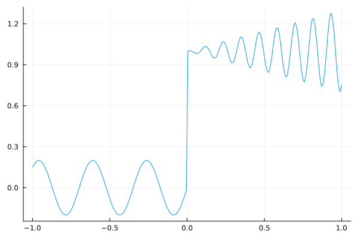
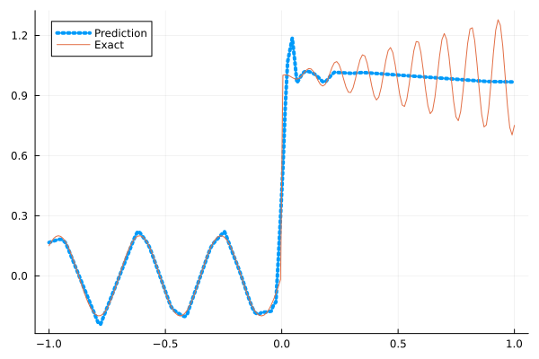
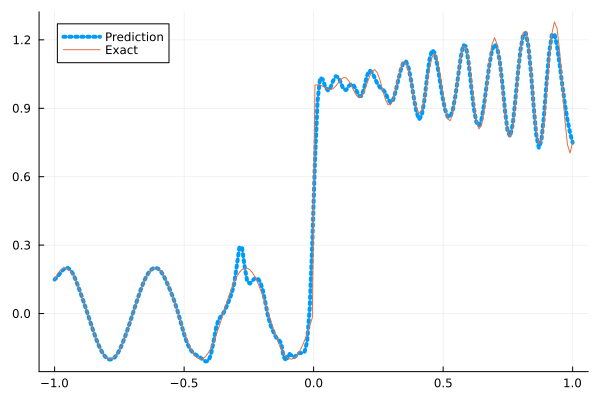
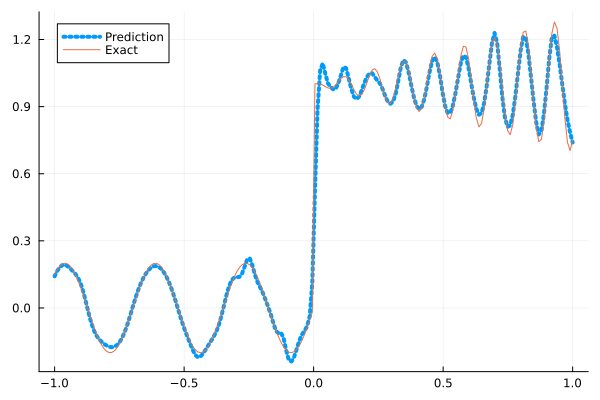

Fitting a nonlinear discontinuous function
This example is taken from here. However, we do not use adaptive activation functions. Instead, we show that using suitable non-parametric activation functions immediately performs better.
Consider the following discontinuous function with discontinuity at $x=0$:
\[u(x)= \begin{cases}0.2 \sin (18 x) & \text { if } x \leq 0 \\ 1+0.3 x \cos (54 x) & \text { otherwise }\end{cases}\]
The domain is $[-1,1]$. The number of training points used is 50.
Import pacakges
using Lux, Sophon
using NNlib, Optimisers, Plots, Random, StatsBase, ZygoteDataset
function u(x)
if x <= 0
return 0.2 * sin(18 * x)
else
return 1 + 0.3 * x * cos(54 * x)
end
end
function generate_data(n=50)
x = reshape(collect(range(-1.0f0, 1.0f0, n)), (1, n))
y = u.(x)
return (x, y)
endgenerate_data (generic function with 2 methods)Let's visualize the data.
x_train, y_train = generate_data(50)
x_test, y_test = generate_data(200)
Plots.plot(vec(x_test), vec(y_test),label=false)
Naive Neural Nets
First we demonstrate show naive fully connected neural nets could be really bad at fitting this function.
model = FullyConnected((1,50,50,50,50,1), relu)Chain(
layer_1 = Dense(1 => 50, relu), # 100 parameters
layer_2 = Dense(50 => 50, relu), # 2_550 parameters
layer_3 = Dense(50 => 50, relu), # 2_550 parameters
layer_4 = Dense(50 => 50, relu), # 2_550 parameters
layer_5 = Dense(50 => 1), # 51 parameters
) # Total: 7_801 parameters,
# plus 0 states, summarysize 80 bytes.Train the model
function train(model, x, y)
ps, st = Lux.setup(Random.default_rng(), model)
opt = Adam()
st_opt = Optimisers.setup(opt,ps)
function loss(model, ps, st, x, y)
y_pred, _ = model(x, ps, st)
mes = mean(abs2, y_pred .- y)
return mes
end
for i in 1:2000
gs = gradient(p->loss(model,p,st,x,y), ps)[1]
st_opt, ps = Optimisers.update(st_opt, ps, gs)
if i % 100 == 1 || i == 2000
println("Epoch $i || ", loss(model,ps,st,x,y))
end
end
return ps, st
endtrain (generic function with 1 method)Plot the result
@time ps, st = train(model, x_train, y_train)
y_pred = model(x_test,ps,st)[1]
Plots.plot(vec(x_test), vec(y_pred),label="Prediction",line = (:dot, 4))
Plots.plot!(vec(x_test), vec(y_test),label="Exact",legend=:topleft)Epoch 1 || 0.5034842773338424
Epoch 101 || 0.017072434279170476
Epoch 201 || 0.015537642984242282
Epoch 301 || 0.014532899841198073
Epoch 401 || 0.013584086279974025
Epoch 501 || 0.013225050406854028
Epoch 601 || 0.013136341609223754
Epoch 701 || 0.013111425991822087
Epoch 801 || 0.013103581773631167
Epoch 901 || 0.013097591900875356
Epoch 1001 || 0.013094671636989932
Epoch 1101 || 0.013092650447383725
Epoch 1201 || 0.013092323791349609
Epoch 1301 || 0.013095666047007222
Epoch 1401 || 0.013095078515347578
Epoch 1501 || 0.013092483515215674
Epoch 1601 || 0.013099223562443666
Epoch 1701 || 0.013109840043235933
Epoch 1801 || 0.013103020997801487
Epoch 1901 || 0.01308225002489416
Epoch 2000 || 0.013093077542008813
10.152760 seconds (13.14 M allocations: 1.482 GiB, 6.09% gc time, 91.07% compilation time)
Siren
We use four hidden layers with 50 neurons in each.
model = Siren(1,50,50,50,50,1; omega = 30f0)Chain(
layer_1 = Dense(1 => 50, sin), # 100 parameters
layer_2 = Dense(50 => 50, sin), # 2_550 parameters
layer_3 = Dense(50 => 50, sin), # 2_550 parameters
layer_4 = Dense(50 => 50, sin), # 2_550 parameters
layer_5 = Dense(50 => 1), # 51 parameters
) # Total: 7_801 parameters,
# plus 0 states, summarysize 88 bytes.@time ps, st = train(model, x_train, y_train)
y_pred = model(x_test,ps,st)[1]
Plots.plot(vec(x_test), vec(y_pred),label="Prediction",line = (:dot, 4))
Plots.plot!(vec(x_test), vec(y_test),label="Exact",legend=:topleft)Epoch 1 || 1.3946653416278991
Epoch 101 || 0.0018409130862019401
Epoch 201 || 0.00018464919239328303
Epoch 301 || 1.161616377235249e-5
Epoch 401 || 4.29615478239485e-7
Epoch 501 || 1.4304780087159052e-8
Epoch 601 || 7.740266623045334e-10
Epoch 701 || 6.494861439690441e-11
Epoch 801 || 7.650647800275747e-12
Epoch 901 || 1.3704401175824188e-12
Epoch 1001 || 3.8546983957017875e-13
Epoch 1101 || 1.2293969221349152e-13
Epoch 1201 || 3.940142372125466e-14
Epoch 1301 || 7.114964067175308e-14
Epoch 1401 || 2.4990491480201878e-14
Epoch 1501 || 3.815697250347735e-14
Epoch 1601 || 4.101269798238577e-14
Epoch 1701 || 5.36507733610681e-14
Epoch 1801 || 4.057985644663563e-14
Epoch 1901 || 2.636597429677583e-14
Epoch 2000 || 3.2580539322292584e-14
5.106312 seconds (8.16 M allocations: 1.298 GiB, 6.40% gc time, 82.30% compilation time)
As we can see the model overfits the data, and the high frequencies cannot be optimized away. We need to tunning the hyperparameter omega
model = Siren(1,50,50,50,50,1; omega = 10f0)Chain(
layer_1 = Dense(1 => 50, sin), # 100 parameters
layer_2 = Dense(50 => 50, sin), # 2_550 parameters
layer_3 = Dense(50 => 50, sin), # 2_550 parameters
layer_4 = Dense(50 => 50, sin), # 2_550 parameters
layer_5 = Dense(50 => 1), # 51 parameters
) # Total: 7_801 parameters,
# plus 0 states, summarysize 88 bytes.@time ps, st = train(model, x_train, y_train)
y_pred = model(x_test,ps,st)[1]
Plots.plot(vec(x_test), vec(y_pred),label="Prediction",line = (:dot, 4))
Plots.plot!(vec(x_test), vec(y_test),label="Exact",legend=:topleft)Epoch 1 || 0.9217809713371331
Epoch 101 || 0.007647342858519018
Epoch 201 || 0.005955341781992803
Epoch 301 || 0.004627771366747046
Epoch 401 || 0.0034928876764389136
Epoch 501 || 0.002507281135279118
Epoch 601 || 0.0016566321584777612
Epoch 701 || 0.0009901821715212044
Epoch 801 || 0.0005362395466622227
Epoch 901 || 0.0002743143234627873
Epoch 1001 || 0.00014886832492212198
Epoch 1101 || 9.547155892458631e-5
Epoch 1201 || 7.169775275276479e-5
Epoch 1301 || 5.922402901497866e-5
Epoch 1401 || 5.152048183669761e-5
Epoch 1501 || 4.618156361776579e-5
Epoch 1601 || 4.2154373962265387e-5
Epoch 1701 || 3.890125170259557e-5
Epoch 1801 || 3.6116317900284254e-5
Epoch 1901 || 3.3628011608909225e-5
Epoch 2000 || 3.135771914526788e-5
0.747380 seconds (1.15 M allocations: 892.451 MiB, 8.97% gc time)Gaussian activation function
We can also try using a fully connected net with the gaussian activation function.
model = FullyConnected((1,50,50,50,50,1), gaussian)Chain(
layer_1 = Dense(1 => 50, gaussian), # 100 parameters
layer_2 = Dense(50 => 50, gaussian), # 2_550 parameters
layer_3 = Dense(50 => 50, gaussian), # 2_550 parameters
layer_4 = Dense(50 => 50, gaussian), # 2_550 parameters
layer_5 = Dense(50 => 1), # 51 parameters
) # Total: 7_801 parameters,
# plus 0 states, summarysize 80 bytes.@time ps, st = train(model, x_train, y_train)
y_pred = model(x_test,ps,st)[1]
Plots.plot(vec(x_test), vec(y_pred),label="Prediction",line = (:dot, 4))
Plots.plot!(vec(x_test), vec(y_test),label="Exact",legend=:topleft)Epoch 1 || 0.3416164852044836
Epoch 101 || 0.005400967188303821
Epoch 201 || 0.004379572701143694
Epoch 301 || 0.0028752480364014742
Epoch 401 || 0.0001958573889332791
Epoch 501 || 2.7458753592457246e-6
Epoch 601 || 1.9604293125509844e-7
Epoch 701 || 6.265052216782006e-7
Epoch 801 || 5.260189627876556e-8
Epoch 901 || 2.9484365711025754e-5
Epoch 1001 || 1.897160023580892e-8
Epoch 1101 || 8.812644671095818e-9
Epoch 1201 || 0.00036598808972778464
Epoch 1301 || 1.0421154817996877e-8
Epoch 1401 || 1.2946366016000632e-9
Epoch 1501 || 5.05206748754952e-10
Epoch 1601 || 5.398535221924424e-5
Epoch 1701 || 3.6387626031088102e-9
Epoch 1801 || 9.499166606410344e-8
Epoch 1901 || 2.7773066089635987e-11
Epoch 2000 || 3.609534123431764e-6
4.787941 seconds (7.29 M allocations: 1.252 GiB, 6.22% gc time, 80.77% compilation time)
Quadratic activation function
quadratic is much cheaper to compute compared to the Gaussain activation function.
model = FullyConnected((1,50,50,50,50,1), quadratic)Chain(
layer_1 = Dense(1 => 50, quadratic), # 100 parameters
layer_2 = Dense(50 => 50, quadratic), # 2_550 parameters
layer_3 = Dense(50 => 50, quadratic), # 2_550 parameters
layer_4 = Dense(50 => 50, quadratic), # 2_550 parameters
layer_5 = Dense(50 => 1), # 51 parameters
) # Total: 7_801 parameters,
# plus 0 states, summarysize 80 bytes.@time ps, st = train(model, x_train, y_train)
y_pred = model(x_test,ps,st)[1]
Plots.plot(vec(x_test), vec(y_pred),label="Prediction",line = (:dot, 4))
Plots.plot!(vec(x_test), vec(y_test),label="Exact",legend=:topleft)Epoch 1 || 0.7825090711816827
Epoch 101 || 0.007412509352003415
Epoch 201 || 0.006711171593894449
Epoch 301 || 0.006240153602168188
Epoch 401 || 0.005827038445386186
Epoch 501 || 0.005489692748605569
Epoch 601 || 0.005227006439536964
Epoch 701 || 0.004962590455487884
Epoch 801 || 0.00467338691073008
Epoch 901 || 0.004357582018094396
Epoch 1001 || 0.003930835654388673
Epoch 1101 || 0.003092978204432344
Epoch 1201 || 0.0018348517572311942
Epoch 1301 || 0.0005555218328416366
Epoch 1401 || 6.526937164418786e-5
Epoch 1501 || 7.427114998214438e-6
Epoch 1601 || 4.244811476152481e-6
Epoch 1701 || 2.5707463088848094e-7
Epoch 1801 || 9.092350859038218e-8
Epoch 1901 || 5.194991157704107e-6
Epoch 2000 || 1.587680848612978e-8
4.301923 seconds (7.04 M allocations: 1.235 GiB, 6.56% gc time, 86.65% compilation time)
Conclusion
"Neural networks suppresse high frequency components" is a misinterpretation of the spectral bias. The accurate way of putting it is that the lower frequencies in the error are optimized first in the optimization process. This can be seen in Siren's example of overfitting data, where you do not have implicit regularization. The high frequency in the network will never go away because it has fitted the data perfectly.
Mainstream attributes the phenomenon that neural networks "suppress" high frequencies to gradient descent. This is not the whole picture. Initialization also plays an important role. Siren mitigats this problem by initializing larger weights in the first layer, while activation functions such as gassian have large enough gradients and sufficiently large support of the second derivative with proper hyperparameters. Please refer to Vincent Sitzmann, Julien Martel, Alexander Bergman, David Lindell, Gordon Wetzstein (2020), Sameera Ramasinghe, Simon Lucey (2021) and Sameera Ramasinghe, Lachlan MacDonald, Simon Lucey (2022) if you want to dive deeper into this.